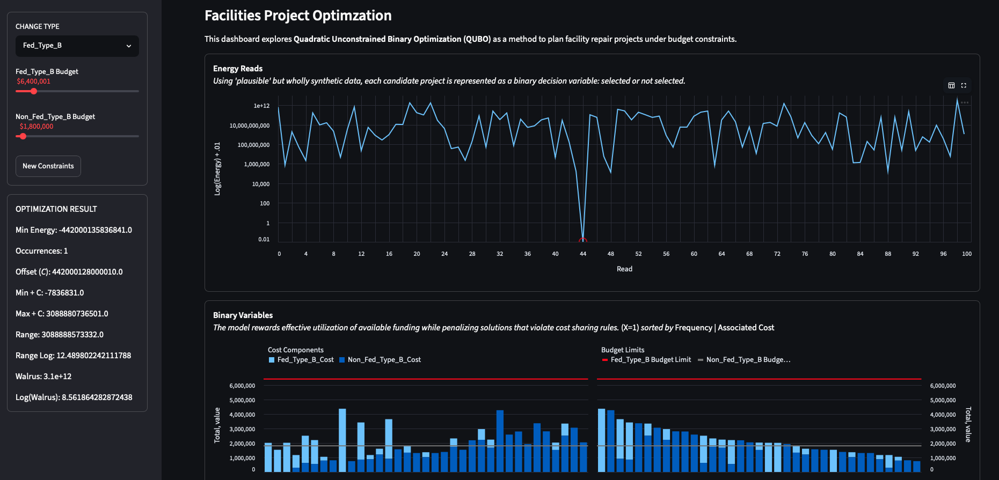

Optimization
Binary Project Selection
The dashboard models candidate facility projects as selected or not selected, using binary decision variables to represent project choices.
Project Detail
QUBO Budget Optimizer is a Streamlit dashboard built around synthetic facility project data. It explores project selection, cost-sharing rules, budget limits, optimization results, and selected-project summaries in a facility-planning context.
Launch the live Streamlit dashboard · View the GitHub repository

Optimization
The dashboard models candidate facility projects as selected or not selected, using binary decision variables to represent project choices.
Budgeting
The app separates primary and non-primary cost components so project selections can be evaluated against multiple budget limits.
QUBO
The model rewards useful funding execution while penalizing solutions that exceed available budget constraints.
Facility planning often involves competing requirements, limited funding, cost-sharing rules, and the need to explain tradeoffs clearly. This project connects optimization theory to a practical decision-support pattern using a synthetic but realistic project-selection scenario.